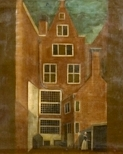

by
Stefan Bielinski
The Albany Quackenbush family is descended from Pieter and perhaps Maria Quackenbush who came to New Netherland during the 1650s. He was known as a brickmaker. Three sons raised families in what became New York. Sons Johannes and Wouter Pieterse established the family site just beyond the north gate of Albany. Their daughter, Cornelia, married brewer and Albany mayor Albert Janse Ryckman.
{kind=link}
In 1697, two Quackenbush households (Johannes and Wouter Jr.) were present in the city of Albany. In 1756, only one Quackenbush home was counted among the city's 330 households.
In 1790, Walter Quackenbush was living in the third ward. But five Quackenbush-named households were counted in adjoining Watervliet including that of Colonel Hendrick Quackenbush - who further developed the family plot and home located north of the city and along the Hudson River. A map dated 1794 recognized "Quackenbush Street" leading from North Market to the river as the center of this tract of land. In 1800, the city census counted three Quackenbush named households.
In 1813, four Quackenbush households including the aMarket Street home of attorney Nicholas N. Quackenbush were listed in the first Albany city directory.
The Quackenbush name is found throughout the land that was settled as New Netherland. A consistent presence in the city of Albany throughout the period, people named Quackenbush were more prominent in the countryside around Albany and also in New Jersey.
notes
Colonial Albany Project profiles
on family members are derived chiefly from family
and community-based resources and from the
genealogy cited above.
 Sources: The most comprehensive work on the
family was presented by Gail Quackenbush.
It presents most of the known records-based information on the family in
an outline narrative. An earlier but lesss comprehensive genealogy appears
online. A Quackenbush bible. The Quackenbush name online.
Sources: The most comprehensive work on the
family was presented by Gail Quackenbush.
It presents most of the known records-based information on the family in
an outline narrative. An earlier but lesss comprehensive genealogy appears
online. A Quackenbush bible. The Quackenbush name online.
first posted: 12/30/02; updated 12/18/11